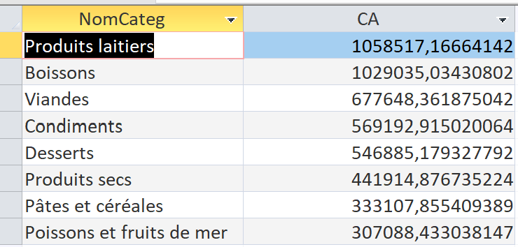
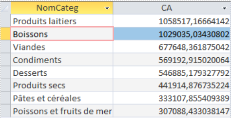
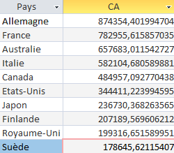

Le groupe
Les requêtes personnelles
Chaque membre de l'équipe présente sa propre analyse des données de KDou.
Requête personnelle
Dina Selmi
Quelles sont les catégories de produits qui génèrent le plus de chiffre d’affaires ?
Code SQL
SELECT Categorie.NomCateg,
SUM(DetailCommande.Quantité * Produit.CoutAchat
* Categorie.CoefMarge
* (1 - DetailCommande.[Remise (%)])) AS CA
FROM (DetailCommande
INNER JOIN Produit
ON Produit.RefProd = DetailCommande.[Réf produit])
INNER JOIN Categorie
ON Produit.CodeCateg = Categorie.CodeCateg
GROUP BY Categorie.NomCateg
ORDER BY SUM(DetailCommande.Quantité * Produit.CoutAchat
* Categorie.CoefMarge
* (1 - DetailCommande.[Remise (%)])) DESC
Résultat dans Access

Requête personnelle
Assa Fofana
Quel chiffre d'affaires chaque catégorie de produits génère-t-elle ?
Calculer la part du chiffre d�ires total généré spécifiquement par les fournisseurs français afin de mesurer l'importance des fournisseurs français pour lɾntreprise KDou.
Code SQL
SELECT ( SUM(IIf(
pa.PaysFR = 'France',
dc.Quantité * p.CoutAchat * cat.CoefMarge
* (1 - dc.[Remise (%)] / 100),
0 ))
/
SUM(
dc.Quantité * p.CoutAchat * cat.CoefMarge
* (1 - dc.[Remise (%)] / 100))) * 100 AS PartCaFrancaisPourcent
FROM (((DetailCommande AS dc
INNER JOIN Produit AS p
ON dc.[Réf produit] = p.RefProd)
INNER JOIN Categorie AS cat
ON p.CodeCateg = cat.CodeCateg)
INNER JOIN Fournisseur AS f
ON p.NoFour = f.NoFour)
INNER JOIN Pays AS pa
ON f.NoPays = pa.NoPays;
Résultat dans Access

Requête personnelle
Marine Duhem
Quels sont les 10 pays fournisseurs qui génèrent le plus de chiffre d'affaires ?
Classement des dix pays fournisseurs selon le chiffre d'affaires généré.
Code SQL
SELECT TOP 10 Pays.PaysFR AS Pays,
SUM(DetailCommande.Quantité * Produit.CoutAchat
* Categorie.CoefMarge
* (1 - DetailCommande.[Remise (%)])) AS CA
FROM (((DetailCommande
INNER JOIN Produit
ON Produit.RefProd = DetailCommande.[Réf produit])
INNER JOIN Categorie
ON Produit.CodeCateg = Categorie.CodeCateg)
INNER JOIN Fournisseur
ON Produit.NoFour = Fournisseur.NoFour)
INNER JOIN Pays
ON Fournisseur.NoPays = Pays.NoPays
GROUP BY Pays.PaysFR
ORDER BY SUM(DetailCommande.Quantité * Produit.CoutAchat
* Categorie.CoefMarge
* (1 - DetailCommande.[Remise (%)])) DESC;
Résultat dans Access
